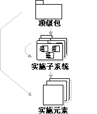
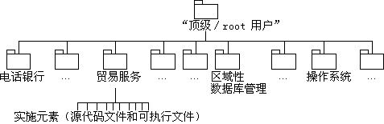

| 指南：实施模型 |
 |
|
| 相关元素 |
|---|
说明在编程环境中，实施由实施元素组成，包括源代码文件、二进制文件和数据文件，这些文件是按目录组织的。 除了这些低级元素外，常常还需要创建更高级的管理单元 － 实施子系统，它们将实施元素和其他实施子系统进行分组。 实施模型主要对实施子系统进行建模，包括依赖关系和其他管理信息。它也可以对实施子系统的关键元素进行建模，例如可部署文件，或目录结构。  实施模型中的表示法。箭头显示可能的所有权。 作为一种选择，可以让一个包来充当实施模型中的顶级（根）节点。构造型为 <<implementation subsystem>> 的包对实施元素（文件和目录）和其他实施子系统进行分组。 示例：在银行系统中，实施子系统是作为实施模型的顶级节点中的扁平结构来组织的。 在实施模型中查看子系统的另一种方法是按层进行查看。（请参阅工作产品指南：导入依赖关系）。  用于银行系统的实施模型，显示所有权层次结构。 该实施模型不仅根据实施子系统的层次结构定义了基本实施结构，还可能显示实施子系统之间的导入依赖关系、实施元素之间的编译依赖关系，以及显示实施模型元素和设计模型元素之间依赖关系的一些图。 关于更多信息，请参阅： 使用实施模型注重的是软件基于实施子系统和实施元素方面的物理组成。 作为一种选择，您可以创建单个模型，该模型通过一个模型中同时处理实际实施和逻辑设计。 这在往返工程法中很常见，该方法使源代码文件与组合的实施／设计模型同步。 实施子系统的组织可以或多或少接近于设计模型，这取决于您决定如何在这两个模型之间进行映射。 这是一项流程决策，应记录在项目特定设计指南中。 如果映射是精确的，即每个实施子系统同时也是一个设计子系统，那么您可以创建注重于单个设计子系统的图，同时概括其设计和实施。
关于如何构造实施模型以及如何在设计模型和实施模型之间进行映射的更多信息，请参阅技术：将设计映射到代码、任务：构造实施模型和 |

© Copyright IBM Corp. 1987, 2006. All Rights Reserved. |